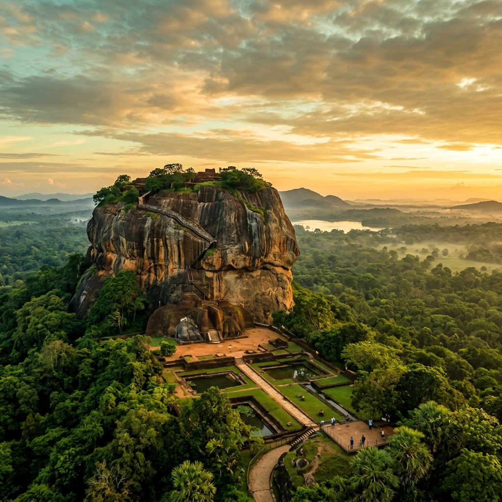
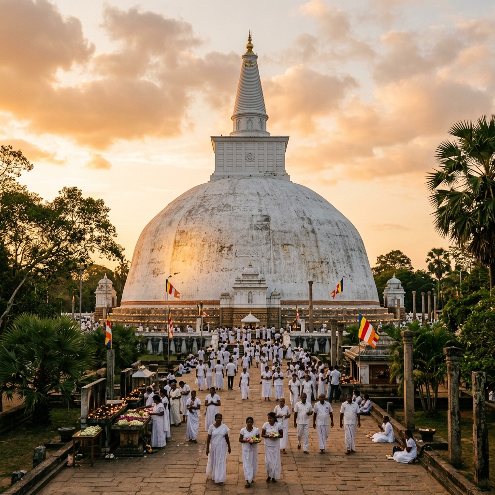
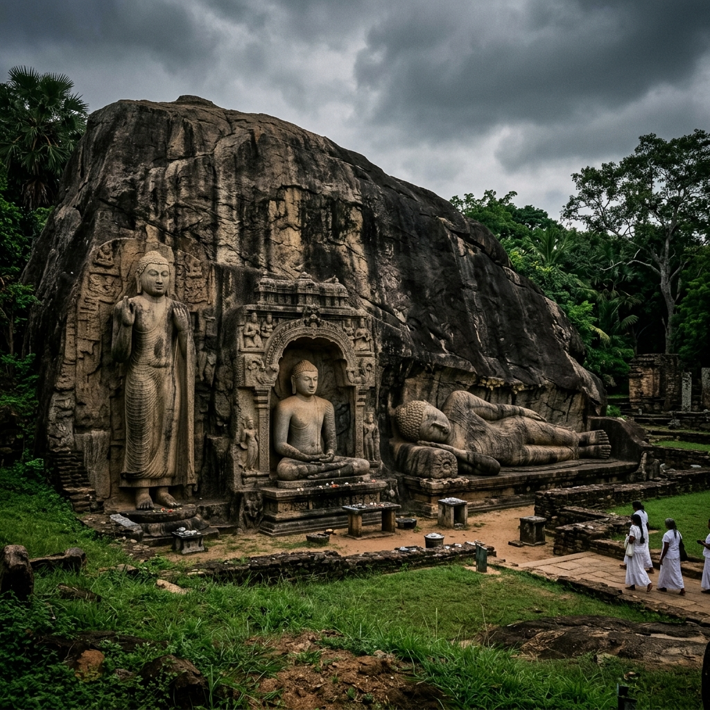

A Journey Through Time
Rise of Anuradhapura
Buddhism is introduced to Sri Lanka. Anuradhapura becomes the first grand capital, flourishing with monumental dagobas.
The Sky Citadel
King Kasyapa builds his magnificent palace on top of the Sigiriya rock, creating an architectural marvel.
Golden Age of Polonnaruwa
Following the decline of Anuradhapura, Polonnaruwa becomes the capital, famed for its massive irrigation systems and stone carvings.

Sigiriya Rock Fortress
Rising dramatically from the central plains, the enigmatic rocky outcrop of Sigiriya is perhaps Sri Lanka's single most dramatic sight. Near-vertical walls soar to a flat-topped summit that contains the ruins of an ancient civilization.
Built by King Kasyapa in the 5th century AD, the fortress features advanced hydraulic systems, the famous 'Mirror Wall', and exquisite frescoes of celestial maidens.

Anuradhapura
The spiritual and historical heart of Sri Lanka. Anuradhapura was the center of Theravada Buddhism for many centuries. Today, its sprawling complex contains a rich collection of archaeological and architectural wonders.
Home to the sacred Sri Maha Bodhi tree—grown from a cutting of the tree under which the Buddha attained enlightenment—and massive bell-shaped stupas (dagobas) built of small sun-dried bricks.

Polonnaruwa
The second most ancient of Sri Lanka's kingdoms, Polonnaruwa remains one of the best planned archaeological relic cities in the country. The city reached its zenith in the 12th century under King Parakramabahu I.
Marvel at the Gal Vihara, a rock temple featuring four colossal statues of the Buddha carved into the face of a large granite boulder, showcasing the pinnacle of Sinhalese rock carving.